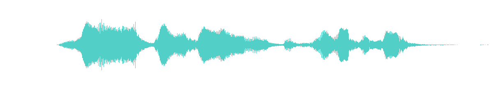

Кандидаты для прослушивания. В игру пока не подключены. Границы выбраны по затишьям в сигнале; это не подтверждённые границы слов. Проверьте, не пропадают ли начало или конец слова.

A B CВремя исходника: 0 → 3,81 с. Паузы около 1,11–1,20 с и 2,06–2,42 с зависят от порога громкости; тихие звуки в них сохраняются.
Минимальное ускорение. Правая граница находится в коротком затишье: нужно проверить окончание слова.
Самый рискованный вариант: начало может продолжать слово из A. Чтобы уложиться в обычный удар, требуется заметное ускорение.
Первым предлагаю проверить C. Сохранён конец записи с запасом тишины. Точка начала расположена в затишье перед последним участком; нужно подтвердить, что это самостоятельный выкрик.
Во всех ускоренных версиях используется atempo, сохраняющий тон. Длительности приблизительные: MP3 добавляет небольшой запас. На тяжёлом ударе игра дополнительно замедляет эффект до 0,82×.
Для согласования: выберите A, B или C и скорость; либо отметьте, где слышен обрыв. Если все части режут слова, целую запись лучше оставить для более длинного действия.